[Trajectory Analysis] Figure 5#
The amount of information available to the mouse correlates inversely with infotaxis behavior.#
For reference, here is the full figure
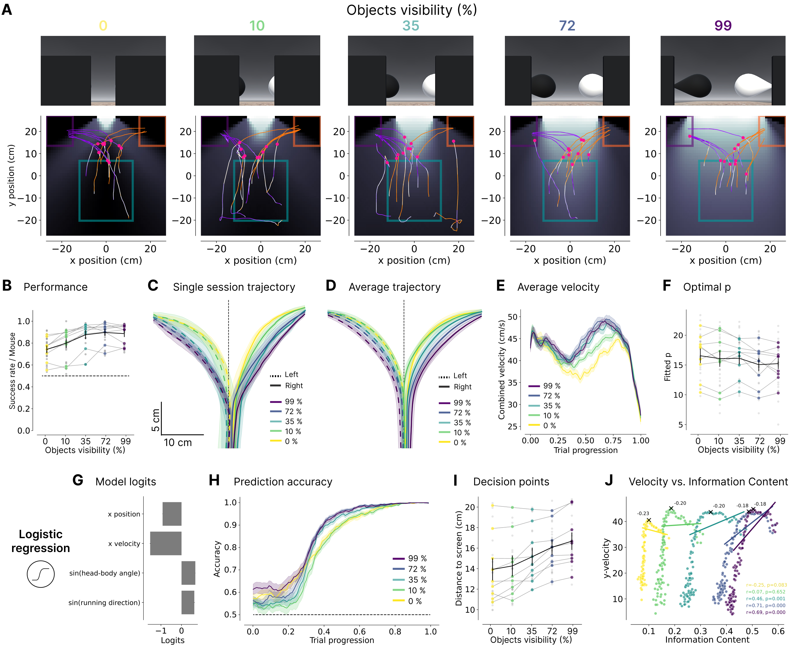
and corresponding supplemental figure

cd "/app/"
/app
/app/.venv/lib/python3.9/site-packages/IPython/core/magics/osm.py:417: UserWarning: using dhist requires you to install the `pickleshare` library.
self.shell.db['dhist'] = compress_dhist(dhist)[-100:]
%run env_aws.py
%run run.py connect
/app/.venv/lib/python3.9/site-packages/datajoint/plugin.py:2: UserWarning: pkg_resources is deprecated as an API. See https://setuptools.pypa.io/en/latest/pkg_resources.html. The pkg_resources package is slated for removal as early as 2025-11-30. Refrain from using this package or pin to Setuptools<81.
import pkg_resources
[2026-02-26 08:34:43,867][INFO]: Connecting admin@vr4mice-ar-collab.cluster-cn54f38qpzgm.eu-central-1.rds.amazonaws.com:3306
[2026-02-26 08:34:44,076][INFO]: Connected admin@vr4mice-ar-collab.cluster-cn54f38qpzgm.eu-central-1.rds.amazonaws.com:3306
import pandas as pd
import matplotlib.pyplot as plt
import numpy as np
import seaborn as sns
from vr4mice.analysis.analysis import style
from vr4mice.schema import vr4mice
from vr4mice.analysis import utils, plotting, analysis
from vr4mice.schema.vr4mice import Groups, Labels
from vr4mice.schema.session_metrics import TrialMetrics
from vr4mice.schema.interpolated_trajectories import InterpolatedTrials, MeanXYTrajectory, MeanVelocities
from vr4mice.analysis.stats import get_multi_p_values_binned, get_multi_p_values_global, plot_aperture_heatmap
from statsmodels.stats.anova import AnovaRM
import statsmodels.formula.api as smf
import scipy.stats as stats
style()
save_fig_path = "notebooks/Paper_figures/Figure_output/"
/app/.venv/lib/python3.9/site-packages/tqdm/auto.py:21: TqdmWarning: IProgress not found. Please update jupyter and ipywidgets. See https://ipywidgets.readthedocs.io/en/stable/user_install.html
from .autonotebook import tqdm as notebook_tqdm
trial_df = (Groups() * (Labels() & 'label = "ar_paper"') * (vr4mice.Dataset() & 'session_label = "ar_discrim_5_occluders"') * TrialMetrics()).fetch(as_dict=True)
trial_df = pd.concat([pd.DataFrame(x) for x in trial_df])
trial_df ["aperture"] = trial_df.aperture.round(2)
trial_df, reward_table = utils.apply_inclusion_criteria(trial_df[["dataset", "aperture", "trial", "trial_left_choice", "trial_rewarded", "trial_tortuosity", "trial_duration"]],
return_excluded=False)
# Create list of included datasets
sessions_list = trial_df.dataset.unique()
trial_df["mouse_name"] = trial_df.dataset.str.split("_").str [0]
trial_df.mouse_name.nunique(), trial_df.dataset.nunique()
(9, 25)
trial_df.groupby("mouse_name").nunique().dataset
mouse_name
31726 2
31728 2
J729 4
Jacana 2
Kiwi 3
Lemming 3
Nightingale 4
Oribi 3
Pheasant 2
Name: dataset, dtype: int64
trial_df.dataset.unique()
array(['31726_2025-03-27_1', '31726_2025-03-28_1', '31728_2025-03-11_1',
'31728_2025-03-14_1', 'J729_2024-12-11_1', 'J729_2024-12-12_1',
'J729_2024-12-13_1', 'J729_2024-12-15_1', 'Jacana_2024-08-21_1',
'Jacana_2024-08-22_1', 'Kiwi_2024-08-19_1', 'Kiwi_2024-08-20_1',
'Kiwi_2024-08-21_1', 'Lemming_2024-08-14_1',
'Lemming_2024-08-15_1', 'Lemming_2024-08-19_1',
'Nightingale_2024-08-15_1', 'Nightingale_2024-08-16_1',
'Nightingale_2024-08-21_1', 'Nightingale_2024-08-22_1',
'Oribi_2024-08-26_1', 'Oribi_2024-08-27_1', 'Oribi_2024-08-29_1',
'Pheasant_2024-08-26_1', 'Pheasant_2024-08-28_1'], dtype=object)
trial_df["lab_id"] = 0
for dataset_name in sessions_list:
# Fetch lab_id for each dataset
trial_df.loc[trial_df.dataset==dataset_name, "lab_id"] = ((vr4mice.Collab() & f'dataset = "{dataset_name}"') * vr4mice.Labs()).fetch("lab")[0]
# Linear Mixed Model (with Mouse)
lmm_model = smf.mixedlm("trial_rewarded ~ C(aperture)",
data=trial_df, groups=trial_df["mouse_name"]).fit(method='bfgs')
# Ordinary Least Squares (without Mouse)
ols_model = smf.ols("trial_rewarded ~ C(aperture)", data=trial_df).fit()
# Likelihood Ratio Test
lr_stat = 2 * (lmm_model.llf - ols_model.llf)
p_val = stats.chi2.sf(lr_stat, df=1) # 1 degree of freedom for the random effect
print(f"LRT Statistic: {lr_stat:.4f}")
print(f"P-value for Mouse effect: {p_val:.4f}")
if p_val > 0.05:
print("Justification: Mouse identity does not significantly improve the model. Independent ANOVA is valid.")
else:
print("Caution: Mouse identity explains significant variance.")
LRT Statistic: 258.5593
P-value for Mouse effect: 0.0000
Caution: Mouse identity explains significant variance.
# Occurance of the different conditions
counts = (
trial_df.groupby(["dataset", "mouse_name", "aperture"])
.trial.nunique()
.reset_index(name="trial_count")
)
total_trials = (
trial_df.groupby("dataset").trial.nunique().reset_index(name="total_trials")
)
counts = counts.merge(total_trials, on="dataset")
counts["probability"] = counts["trial_count"] / counts["total_trials"]
counts["aperture"] = counts["aperture"].astype("float")
counts = counts.sort_values("aperture")
counts["aperture_numeric"] = counts["aperture"]
aperture_order = counts["aperture"].unique()
counts["aperture"] = pd.Categorical(counts["aperture"].astype("str"), categories=aperture_order.astype("str"), ordered=True)
fig, ax = plt.subplots(1, 2, figsize=(10, 5))
sns.lineplot(
data=counts.groupby(["aperture", "mouse_name"], as_index=False).probability.mean(),
x="aperture",
y="probability",
units="mouse_name",
estimator=None,
color="grey",
alpha=0.7,
linewidth=1,
zorder=3,
ax=ax[0]
)
sns.scatterplot(
data=counts.groupby(["aperture", "mouse_name"], as_index=False).probability.mean(),
x="aperture",
y="probability",
hue="aperture",
palette=plotting.colors_multi_aperture[::-1],
alpha=0.6,
s=50,
zorder=2,
ax=ax[0]
)
sns.scatterplot(
data=counts,
x="aperture",
y="probability",
hue="aperture",
palette=["grey"] * counts["dataset"].nunique(),
alpha=0.6,
zorder=1,
s=20,
ax=ax[0]
)
sns.lineplot(
data=counts.groupby(["aperture", "mouse_name"], as_index=False).probability.mean(),
x="aperture",
y="probability",
color="black",
err_style="bars",
errorbar="se",
alpha=0.8,
zorder=4,
ax=ax[0]
)
ax[0].hlines(
0.2,
xmin=-0.25,
xmax=len(trial_df.aperture.unique()) - 0.75,
linestyles="dashed",
colors="k",
)
ax[0].set_ylim(0, .5)
ax[0].set_xlim(-0.5, 4.5)
ax[0].invert_xaxis()
ax[0].set_xticks([4, 3, 2, 1, 0], ["0", "10", "35", "72", "99"])
ax[0].set_xlabel("Object visibility (%)")
ax[0].set_ylabel("P(Occurance)")
sns.despine(offset=10)
ax[0].legend([], [], frameon=False)
# Use numeric aperture for statistical analysis
counts_for_stats = counts.copy()
counts_for_stats['aperture'] = counts_for_stats['aperture_numeric']
p_values = get_multi_p_values_global(counts_for_stats, y_var="probability")
plot_aperture_heatmap(p_values, ax= ax[1])
ax[1].set_xticks([4.5, 3.5, 2.5, 1.5, 0.5], ["0", "10", "35", "72", "99"])
ax[1].set_yticks([4.5, 3.5, 2.5, 1.5, 0.5], ["0", "10", "35", "72", "99"])
print(AnovaRM(counts_for_stats, depvar="probability", subject="dataset", within=["aperture"]).fit())
plt.savefig(save_fig_path + "figure5_occurance.svg", transparent=True)
Anova
======================================
F Value Num DF Den DF Pr > F
--------------------------------------
aperture 0.0901 4.0000 96.0000 0.9854
======================================
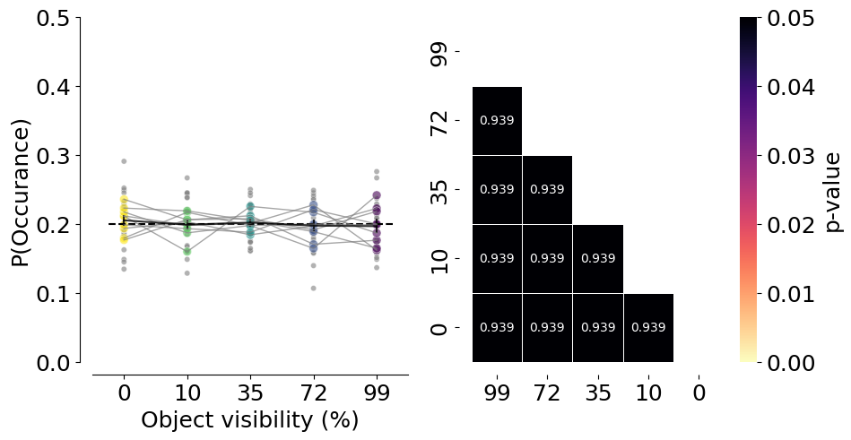
# Success rate per mouse
fig, ax = plt.subplots(1, 1, figsize=(4, 5))
plotting.plot_rate(
df=trial_df,
label_x="trial_rewarded",
per_aperture=True,
ax=ax,
cmap=plotting.colors_multi_aperture,
per_mouse=True,
)
ax.hlines(
0.5,
xmin=-0.25,
xmax=len(trial_df.aperture.unique()) - 0.75,
linestyles="dashed",
colors="k",
)
ax.set_ylim(0, 1.1)
ax.set_xlim(-0.5, 4.5)
ax.set_xlabel("Object visibility (%)")
ax.set_ylabel("Success rate / Mouse")
ax.set_xticks([0, 1, 2, 3, 4], ["0", "10", "35", "72", "99"])
ax.legend([], [], frameon=False)
sns.despine(offset=10)
print(AnovaRM(counts_for_stats, depvar="probability", subject="dataset", within=["aperture"]).fit())
plt.savefig(save_fig_path + "figure5_rewards_per_mouse.svg", transparent=True)
3.0-4.2: TtestResult(statistic=-2.493988124742931, pvalue=0.019918841916005924, df=24)
3.0-6.0: TtestResult(statistic=-4.3481596890469, pvalue=0.00021792423175303471, df=24)
3.0-8.48: TtestResult(statistic=-5.936285133499774, pvalue=3.986044948258331e-06, df=24)
3.0: mean=0.749 ± 0.021
4.2-6.0: TtestResult(statistic=-2.1904409874229156, pvalue=0.03844327894682323, df=24)
4.2-8.48: TtestResult(statistic=-2.8444593290376323, pvalue=0.008952505101484732, df=24)
4.2: mean=0.819 ± 0.024
6.0-8.48: TtestResult(statistic=-0.4633245496675397, pvalue=0.6473060246641702, df=24)
6.0: mean=0.891 ± 0.021
8.48: mean=0.905 ± 0.017
12.0-3.0: TtestResult(statistic=4.847181901915849, pvalue=6.12561974792148e-05, df=24)
12.0-4.2: TtestResult(statistic=2.6168388007399845, pvalue=0.015117166807783985, df=24)
12.0-6.0: TtestResult(statistic=0.04065996451030943, pvalue=0.9679033410169438, df=24)
12.0-8.48: TtestResult(statistic=-0.5678700816992147, pvalue=0.5753978552200469, df=24)
12.0: mean=0.892 ± 0.019
Anova
======================================
F Value Num DF Den DF Pr > F
--------------------------------------
aperture 0.0901 4.0000 96.0000 0.9854
======================================
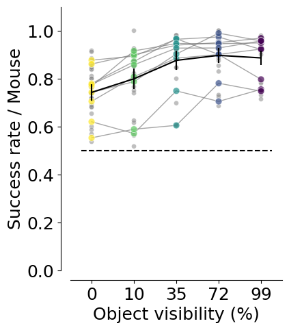
# Success rate per mouse
fig, ax = plt.subplots(1, 2, figsize=(10, 5))
plotting.plot_rate(
df=trial_df,
label_x="trial_rewarded",
per_aperture=True,
ax=ax[0],
cmap=plotting.colors_multi_aperture,
per_lab=True,
)
ax[0].hlines(
0.5,
xmin=-0.25,
xmax=len(trial_df.aperture.unique()) - 0.75,
linestyles="dashed",
colors="k",
)
ax[0].set_ylim(0, 1.1)
ax[0].set_xlim(-0.5, 4.5)
ax[0].set_xlabel("Object visibility (%)")
ax[0].set_ylabel("Success rate / Mouse")
ax[0].set_xticks([0, 1, 2, 3, 4], ["0", "10", "35", "72", "99"])
ax[0].legend([], [], frameon=False)
sns.despine(offset=10)
p_values = get_multi_p_values_global(trial_df, y_var="trial_rewarded")
plot_aperture_heatmap(p_values, ax=ax[1])
ax[1].set_xticks([4.5, 3.5, 2.5, 1.5, 0.5], ["0", "10", "35", "72", "99"])
ax[1].set_yticks([4.5, 3.5, 2.5, 1.5, 0.5], ["0", "10", "35", "72", "99"])
mean_mouse = trial_df.groupby(["dataset", "aperture"], as_index=False).mean(numeric_only=True)
print(AnovaRM(mean_mouse, depvar="trial_rewarded", subject="dataset", within=["aperture"]).fit())
plt.savefig(save_fig_path + "figure5_rewards.svg", transparent=True)
3.0-4.2: TtestResult(statistic=-4.294775142156709, pvalue=0.000249592248485294, df=24)
3.0-6.0: TtestResult(statistic=-8.63596674410741, pvalue=7.938488027221137e-09, df=24)
3.0-8.48: TtestResult(statistic=-9.922891044401927, pvalue=5.716543717984163e-10, df=24)
3.0: mean=0.749 ± 0.021
4.2-6.0: TtestResult(statistic=-4.96095944839423, pvalue=4.5893003535062247e-05, df=24)
4.2-8.48: TtestResult(statistic=-5.653014738081343, pvalue=8.04406204065893e-06, df=24)
4.2: mean=0.819 ± 0.024
6.0-8.48: TtestResult(statistic=-0.9143341342926102, pvalue=0.36963645105671183, df=24)
6.0: mean=0.891 ± 0.021
8.48: mean=0.905 ± 0.017
12.0-3.0: TtestResult(statistic=9.908373156320879, pvalue=5.88184256287188e-10, df=24)
12.0-4.2: TtestResult(statistic=4.653696076204195, pvalue=0.00010017441571757577, df=24)
12.0-6.0: TtestResult(statistic=0.07659887976618203, pvalue=0.9395776368965353, df=24)
12.0-8.48: TtestResult(statistic=-0.931285761959232, pvalue=0.36097991128194373, df=24)
12.0: mean=0.892 ± 0.019
Anova
======================================
F Value Num DF Den DF Pr > F
--------------------------------------
aperture 37.5249 4.0000 96.0000 0.0000
======================================
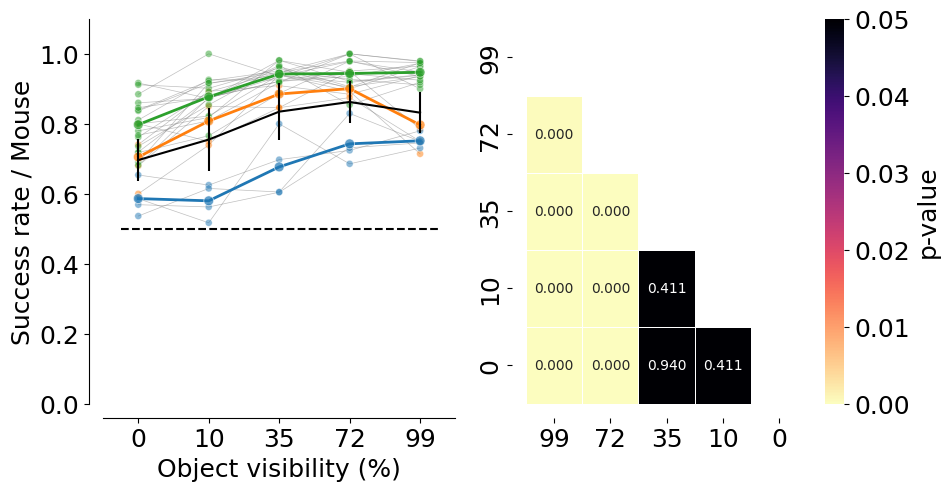
trial_df["trial_bias"] = 2 * trial_df["trial_left_choice"] - 1
# Choice bias per mouse and per lab
fig, ax = plt.subplots(1, 4, figsize=(20, 5))
plotting.plot_rate(
df=trial_df,
label_x="trial_left_choice",
plot_bias=True,
per_aperture=True,
ax=ax[0],
cmap=plotting.colors_multi_aperture,
per_mouse=True,
)
ax[0].vlines(
0,
ymin=-0.25,
ymax=len(trial_df.aperture.unique()) - 0.75,
linestyles="dashed",
colors="grey",
)
ax[0].set_ylabel("Object visibility (%)")
ax[0].set_xlabel("Choice bias index / Mouse")
ax[0].set_yticks([0, 1, 2, 3, 4], ["0", "10", "35", "72", "99"])
ax[0].legend([], [], frameon=False)
sns.despine(offset=10)
plotting.plot_rate(
df=trial_df,
label_x="trial_left_choice",
per_aperture=True,
plot_bias=True,
ax=ax[1],
cmap=plotting.colors_multi_aperture,
per_lab=True,
)
ax[1].vlines(
0,
ymin=-0.25,
ymax=len(trial_df.aperture.unique()) - 0.75,
linestyles="dashed",
colors="grey",
)
ax[1].set_ylabel("Object visibility (%)")
ax[1].set_xlabel("Choice bias index / Session")
ax[1].set_yticks([0, 1, 2, 3, 4], ["0", "10", "35", "72", "99"])
ax[1].legend([], [], frameon=False)
# One-sample t-test of bias against 0 (null) across session
apertures_ = []
for stage in sorted(trial_df.aperture.unique()):
#vals = trial_df.groupby("dataset").mean().loc[trial_df.aperture == stage, "trial_bias"]
vals = trial_df[trial_df.aperture == stage].groupby("dataset")["trial_bias"].mean()
t_stat, p_val = stats.ttest_1samp(vals, 0)
apertures_.append({
"aperture": stage,
"n": len(vals),
"mean_bias": vals.mean(),
"t_stat": t_stat,
"df": max(len(vals) - 1, 0),
"p_value": p_val,
})
apertures_df = pd.DataFrame(apertures_)
print("One-sample t-tests vs 0 (bias)")
print(apertures_df)
# Plot p-values only (no bar/box)
ax[2].plot(apertures_df["aperture"], apertures_df["p_value"],
marker="o", linestyle="-", color="k")
ax[2].axhline(0.05, color="grey", linestyle="--")
ax[2].set_xlabel("Training stage")
ax[2].set_ylabel("p-value (vs 0)")
# Plot p-values of the multi-comparison test
p_values = get_multi_p_values_global(trial_df, y_var="trial_bias")
plot_aperture_heatmap(p_values, ax=ax[3])
ax[3].set_xticks([4.5, 3.5, 2.5, 1.5, 0.5], ["0", "10", "35", "72", "99"])
ax[3].set_yticks([4.5, 3.5, 2.5, 1.5, 0.5], ["0", "10", "35", "72", "99"])
mean_mouse = trial_df.groupby(["dataset", "aperture"], as_index=False).mean(numeric_only=True)
print(AnovaRM(mean_mouse, depvar="trial_bias", subject="dataset", within=["aperture"]).fit())
sns.despine(offset=10)
plt.tight_layout(pad=2)
plt.savefig(save_fig_path + "figure5_choice_bias.svg", transparent=True)
3.0-4.2: TtestResult(statistic=0.16336372813892353, pvalue=0.8715999221309235, df=24)
3.0-6.0: TtestResult(statistic=0.4605874808001341, pvalue=0.6492408672893397, df=24)
3.0-8.48: TtestResult(statistic=-0.21695206601737546, pvalue=0.8300793967741364, df=24)
3.0: mean=-0.015 ± 0.058
4.2-6.0: TtestResult(statistic=0.24990922807693325, pvalue=0.8047842776180888, df=24)
4.2-8.48: TtestResult(statistic=-0.4639523528123425, pvalue=0.6468625851577114, df=24)
4.2: mean=-0.029 ± 0.050
6.0-8.48: TtestResult(statistic=-0.8071400388375911, pvalue=0.4275128960568405, df=24)
6.0: mean=-0.044 ± 0.029
8.48: mean=-0.002 ± 0.037
12.0-3.0: TtestResult(statistic=1.039734229048693, pvalue=0.30882528560258005, df=24)
12.0-4.2: TtestResult(statistic=1.4772944346317236, pvalue=0.15260002867784161, df=24)
12.0-6.0: TtestResult(statistic=2.278039263657111, pvalue=0.031918811598357646, df=24)
12.0-8.48: TtestResult(statistic=1.0817185531546654, pvalue=0.2901272683683604, df=24)
12.0: mean=0.049 ± 0.034
3.0-4.2: TtestResult(statistic=0.3303329546903208, pvalue=0.7440147221911171, df=24)
3.0-6.0: TtestResult(statistic=0.5474973379875565, pvalue=0.5890929385696668, df=24)
3.0-8.48: TtestResult(statistic=-0.28162984226312127, pvalue=0.7806414478763297, df=24)
3.0: mean=-0.015 ± 0.058
4.2-6.0: TtestResult(statistic=0.33326551431673085, pvalue=0.7418278714668143, df=24)
4.2-8.48: TtestResult(statistic=-0.6351285779922629, pvalue=0.5313537966029576, df=24)
4.2: mean=-0.029 ± 0.050
6.0-8.48: TtestResult(statistic=-1.08954063479577, pvalue=0.28673501955019925, df=24)
6.0: mean=-0.044 ± 0.029
8.48: mean=-0.002 ± 0.037
12.0-3.0: TtestResult(statistic=1.4802509019087695, pvalue=0.15181514125284346, df=24)
12.0-4.2: TtestResult(statistic=1.8501849075249917, pvalue=0.07663684708004127, df=24)
12.0-6.0: TtestResult(statistic=2.5416645549429004, pvalue=0.017907792162877075, df=24)
12.0-8.48: TtestResult(statistic=1.279571292169318, pvalue=0.2129281449325434, df=24)
12.0: mean=0.049 ± 0.034
One-sample t-tests vs 0 (bias)
aperture n mean_bias t_stat df p_value
0 3.00 25 -0.014895 -0.258352 24 0.798338
1 4.20 25 -0.029098 -0.578491 24 0.568322
2 6.00 25 -0.043690 -1.497616 24 0.147271
3 8.48 25 -0.001692 -0.046162 24 0.963563
4 12.00 25 0.049098 1.450087 24 0.159978
Anova
======================================
F Value Num DF Den DF Pr > F
--------------------------------------
aperture 1.3589 4.0000 96.0000 0.2540
======================================
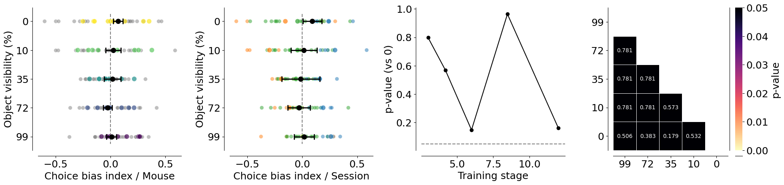
fig, ax = plt.subplots(1, 2, figsize=(10, 5))
counts = (
trial_df
.groupby(["lab_id", "dataset", "aperture"], as_index=False)
.trial_tortuosity.mean()
)
counts["count"] = counts["trial_tortuosity"]
counts = pd.DataFrame(counts.reset_index())
counts.aperture = counts.aperture.round(2).astype(str)
plotting._plot_bar_counts(
counts=counts,
label_x="aperture",
alpha=0.2,
ax=ax[0],
per_lab=True,
cmap=plotting.colors_aperture[0:2],
)
ax[0].invert_xaxis()
ax[0].set_xlim(-0.5, 4.5)
ax[0].set_xlabel("Object visibility (%)")
ax[0].set_ylabel("Trial Tortuosity / Session")
ax[0].set_xticks([0, 1, 2, 3, 4], ["0", "10", "35", "72", "99"])
ax[0].legend([], [], frameon=False)
sns.despine(offset=10)
p_values = get_multi_p_values_global(trial_df, y_var="trial_tortuosity")
plot_aperture_heatmap(p_values, ax=ax[1])
ax[1].set_xticks([4.5, 3.5, 2.5, 1.5, 0.5], ["0", "10", "35", "72", "99"])
ax[1].set_yticks([4.5, 3.5, 2.5, 1.5, 0.5], ["0", "10", "35", "72", "99"])
mean_mouse = trial_df.groupby(["dataset", "aperture"], as_index=False).mean(numeric_only=True)
print(AnovaRM(mean_mouse, depvar="trial_tortuosity", subject="dataset", within=["aperture"]).fit())
plt.savefig(save_fig_path + "figure5_tortuosity.svg", transparent=True)
Anova
======================================
F Value Num DF Den DF Pr > F
--------------------------------------
aperture 11.8531 4.0000 96.0000 0.0000
======================================
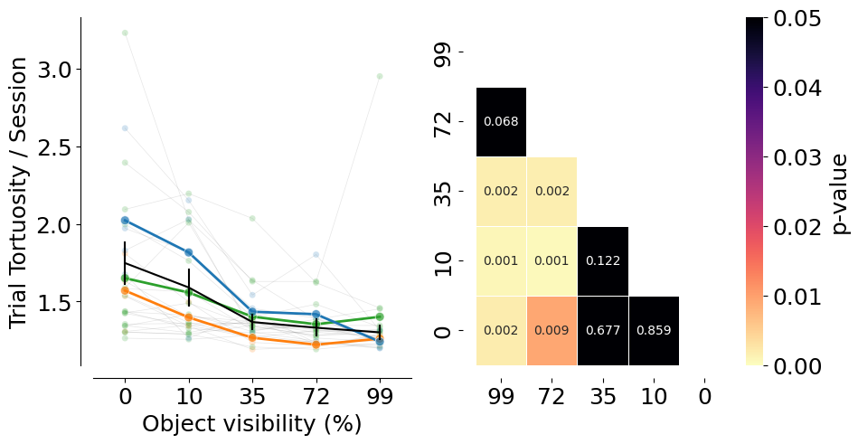
Trajectory analysis#
xy_df = []
for m in sessions_list:
xy_df.append(pd.DataFrame((MeanXYTrajectory() & f'dataset="{m}"').fetch(as_dict=True)[0]))
xy_df = pd.concat(xy_df)
xy_df["mouse_name"] = xy_df.dataset.str.split("_").str [0]
# Mean and error by mouse
mean_mouse = analysis.mean_xy_trajectory(xy_df,
index_columns=[
"mouse_name", "aperture", "trial_left_choice", "trial_length"
])
for m in mean_mouse.mouse_name.unique():
plotting.plot_mean_xy_trajectory(mean_mouse[mean_mouse.mouse_name == m], cmap=plt.cm.viridis_r, color_by="aperture", style_by="choice")
plt.title(m)
plt.savefig(save_fig_path + f"figure5_trajectories_time_{m}.svg", transparent=True)
plt.savefig(save_fig_path + f"figure5_trajectories_time_{m}.png", transparent=True, dpi=300)
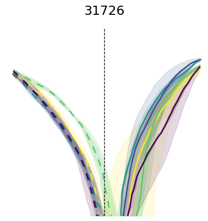
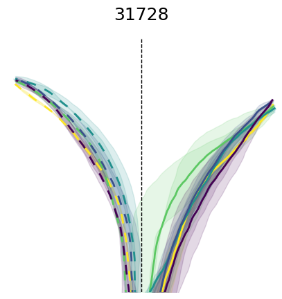
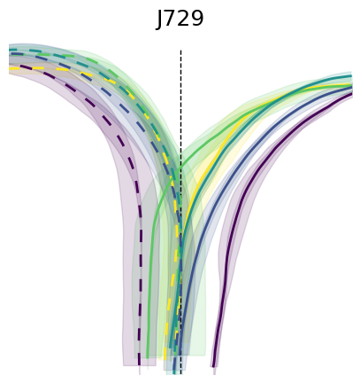
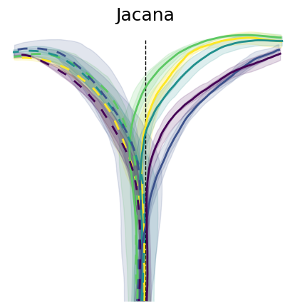
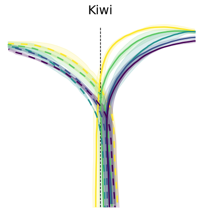
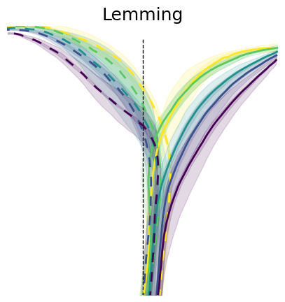
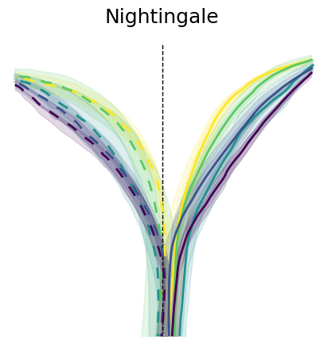
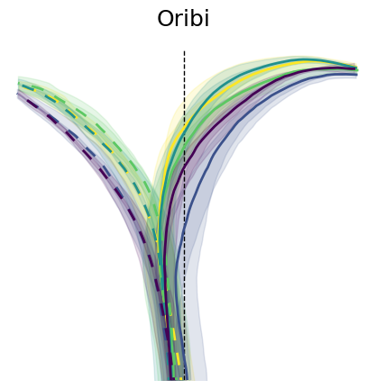
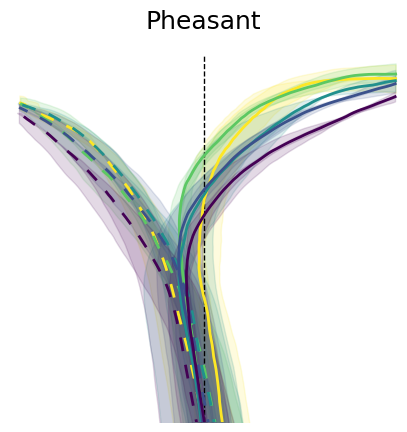
# Mean and error by aperture and choice
mean_group = analysis.mean_xy_trajectory(mean_mouse,
index_columns=[
"aperture", "trial_left_choice", "trial_length"
])
# Plot the mean trajectories from 0, 23 cm in y axis, -18, 18 cm in x axis, colored by choice and styled by aperture
plotting.plot_mean_xy_trajectory(mean_group, cmap=plt.cm.viridis_r, color_by="aperture", style_by="choice")
plt.savefig(save_fig_path + "figure5_trajectories_time.svg", transparent=True)
plt.savefig(save_fig_path + "figure5_trajectories_time.png", transparent=True, dpi=300)
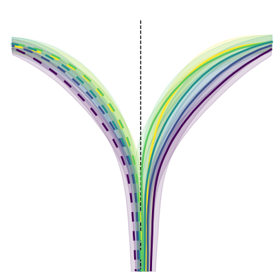
Stats on trajectories#
y_binned_df = []
for m in sessions_list:
try:
y_binned_df.append(pd.DataFrame((InterpolatedTrials() & f'dataset="{m}"').fetch("dataset", "aperture", "trial", "trial_left_choice", "x", "y", "flip_one_side", "trial_rewarded", "velocity", "trial_length", as_dict=True)[0]))
except Exception as err:
print(err)
y_binned_df = pd.concat(y_binned_df)
aperture_to_occlusion = {
12.0: 99,
8.48: 72,
6.0: 35,
4.2: 10,
3.0: 0
}
y_binned_df["aperture"] = y_binned_df["aperture"].map(aperture_to_occlusion)
y_binned_df["mouse_name"] = y_binned_df.dataset.str.split("_").str [0]
y_binned_df["x_flipped"] = y_binned_df.x * y_binned_df.flip_one_side
data = utils.create_bins(y_binned_df)
y_binned_df_mean = analysis.mean_xy_trajectory(data, index_columns= ["dataset", "mouse_name", "aperture", "bin_centers"], values=["x_flipped", "y"])
# NOTE(celia): Data unbalanced across bins, so only include bins so that balanced
stats_binned = y_binned_df_mean[(y_binned_df_mean.bin_centers >= 0) & (y_binned_df_mean.bin_centers <= 19)]
sns.lineplot(data=stats_binned, x="bin_centers", y="x_flipped", hue="aperture", palette= "viridis_r",errorbar="se")
plt.xlabel("Y bin")
plt.ylabel("X position")
sns.despine(offset=10)
plt.savefig(save_fig_path + "figure5_mean_xy_trajectory.svg")
print(
AnovaRM(
data=stats_binned,
depvar="x_flipped",
subject="dataset",
within=["aperture", "bin_centers"],
).fit()
)
Anova
======================================================
F Value Num DF Den DF Pr > F
------------------------------------------------------
aperture 8.8064 4.0000 96.0000 0.0000
bin_centers 145.7173 24.0000 576.0000 0.0000
aperture:bin_centers 2.5887 96.0000 2304.0000 0.0000
======================================================
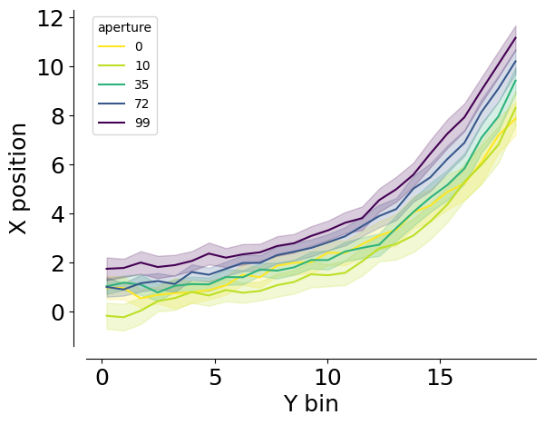
p_value_df = get_multi_p_values_binned(stats_binned, x_var="bin_centers", y_var="x_flipped")
sns.lineplot(data = p_value_df, x="bin", y="p_value_corr", hue=zip(p_value_df.comp1, p_value_df.comp2))
plt.ylabel("FDR p-value")
plt.xlabel("y bin")
plt.yscale("log")
plt.axhline(0.05, linestyle="dashed", color="red", alpha=0.5)
sns.despine(offset=10)
plt.savefig(save_fig_path + "figure5_pos_pvalue.svg", transparent=True)
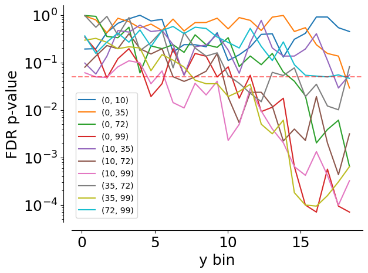
p_value_df.pivot(index = "bin", columns=["comp1", "comp2"], values=["p_value_corr"])
| p_value_corr | ||||||||||
|---|---|---|---|---|---|---|---|---|---|---|
| comp1 | 0 | 10 | 35 | 72 | ||||||
| comp2 | 10 | 35 | 72 | 99 | 35 | 72 | 99 | 72 | 99 | 99 |
| bin | ||||||||||
| 0.2145 | 0.192174 | 0.956419 | 0.973089 | 0.344165 | 0.097154 | 0.079531 | 0.060769 | 0.971913 | 0.295388 | 0.362481 |
| 0.9695 | 0.195309 | 0.788674 | 0.936356 | 0.182775 | 0.057112 | 0.136433 | 0.049608 | 0.552200 | 0.321979 | 0.154970 |
| 1.7245 | 0.427642 | 0.420168 | 0.353099 | 0.047190 | 0.135254 | 0.226977 | 0.048715 | 0.936356 | 0.265880 | 0.269191 |
| 2.4795 | 0.668287 | 0.854669 | 0.332668 | 0.119972 | 0.471501 | 0.195309 | 0.081074 | 0.375018 | 0.194958 | 0.416613 |
| 3.2345 | 0.831765 | 0.723907 | 0.552567 | 0.195309 | 0.436272 | 0.403973 | 0.108547 | 0.882090 | 0.214212 | 0.267612 |
| 3.9895 | 0.987504 | 0.532996 | 0.060248 | 0.086630 | 0.610762 | 0.195309 | 0.098347 | 0.177661 | 0.201915 | 0.485269 |
| 4.7445 | 0.749459 | 0.642495 | 0.223488 | 0.019187 | 0.448858 | 0.151232 | 0.035700 | 0.262764 | 0.067216 | 0.217900 |
| 5.5000 | 0.810183 | 0.471501 | 0.195309 | 0.035700 | 0.476597 | 0.194958 | 0.066373 | 0.468058 | 0.146549 | 0.468699 |
| 6.2555 | 0.165944 | 0.819766 | 0.236456 | 0.194958 | 0.236456 | 0.050104 | 0.014307 | 0.077088 | 0.111940 | 0.574385 |
| 7.0105 | 0.237446 | 0.460770 | 0.163390 | 0.054519 | 0.053834 | 0.040002 | 0.011031 | 0.427642 | 0.079953 | 0.405357 |
| 7.7655 | 0.236456 | 0.691595 | 0.382658 | 0.154868 | 0.214212 | 0.049608 | 0.036423 | 0.201915 | 0.042309 | 0.552200 |
| 8.5205 | 0.214212 | 0.696030 | 0.236456 | 0.135254 | 0.232779 | 0.065505 | 0.020740 | 0.136433 | 0.035700 | 0.520192 |
| 9.2755 | 0.422486 | 0.856608 | 0.208157 | 0.049608 | 0.391246 | 0.154868 | 0.040284 | 0.159660 | 0.035700 | 0.344165 |
| 10.0305 | 0.109896 | 0.511517 | 0.332668 | 0.081022 | 0.182355 | 0.018579 | 0.002283 | 0.053131 | 0.019187 | 0.264710 |
| 10.7855 | 0.145267 | 0.882090 | 0.082383 | 0.017654 | 0.059304 | 0.005374 | 0.004979 | 0.036423 | 0.024577 | 0.201915 |
| 11.5405 | 0.211958 | 0.771127 | 0.136726 | 0.053834 | 0.262764 | 0.023512 | 0.028312 | 0.022509 | 0.034795 | 0.522318 |
| 12.2955 | 0.390403 | 0.471501 | 0.089899 | 0.009237 | 0.769869 | 0.023583 | 0.009513 | 0.014921 | 0.005019 | 0.218224 |
| 13.0510 | 0.402682 | 0.902802 | 0.154868 | 0.011433 | 0.201915 | 0.012047 | 0.003978 | 0.062014 | 0.003149 | 0.109896 |
| 13.8065 | 0.129775 | 0.977774 | 0.062885 | 0.017654 | 0.136433 | 0.002223 | 0.002040 | 0.053159 | 0.006096 | 0.271056 |
| 14.5615 | 0.307954 | 0.448858 | 0.040284 | 0.000643 | 0.136433 | 0.003968 | 0.000643 | 0.077088 | 0.000181 | 0.089899 |
| 15.3165 | 0.410721 | 0.540532 | 0.019861 | 0.000100 | 0.192174 | 0.002283 | 0.000421 | 0.019044 | 0.000100 | 0.053834 |
| 16.0715 | 0.909310 | 0.236456 | 0.002027 | 0.000071 | 0.403973 | 0.019187 | 0.001329 | 0.034795 | 0.000095 | 0.051742 |
| 16.8265 | 0.907086 | 0.154970 | 0.003869 | 0.000568 | 0.111218 | 0.002027 | 0.000421 | 0.012141 | 0.000157 | 0.049608 |
| 17.5815 | 0.539659 | 0.136159 | 0.006096 | 0.000095 | 0.029046 | 0.000434 | 0.000100 | 0.010084 | 0.000307 | 0.054841 |
| 18.3365 | 0.448858 | 0.029046 | 0.000643 | 0.000071 | 0.054841 | 0.003149 | 0.000324 | 0.081518 | 0.000643 | 0.046315 |
Velocity analysis#
velocity_df = []
for m in sessions_list:
#print(m)
velocity_df.append(pd.DataFrame((MeanVelocities() & f'dataset="{m}"').fetch(as_dict=True)[0]))
velocity_df = pd.concat(velocity_df)
mean_mouse = velocity_df.groupby(["dataset", "aperture", "trial_length"],as_index=False).mean()
aperture_to_occlusion = {
12.0: 99,
8.48: 72,
6.0: 35,
4.2: 10,
3.0: 0
}
# Map the values
mean_mouse['aperture'] = mean_mouse['aperture'].map(aperture_to_occlusion)
fig, ax = plt.subplots(1, 1, figsize=(5, 5))
sns.lineplot(
data=mean_mouse,
x="trial_length",
y="velocity",
palette=plotting.colors_multi_aperture,
hue="aperture",
errorbar="se",
ax=ax,
)
sns.despine(offset=10)
ax.set_xlabel("Trial progression")
ax.set_ylabel("Combined velocity (cm/s)")
plt.savefig(save_fig_path + "figure5_velocity.svg", transparent=True)
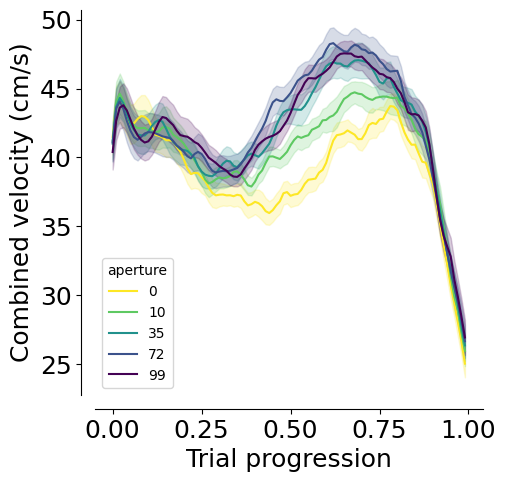
print(
AnovaRM(
data=mean_mouse,
depvar="velocity",
subject="dataset",
within=["aperture", "trial_length"],
).fit()
)
Anova
=======================================================
F Value Num DF Den DF Pr > F
-------------------------------------------------------
aperture 14.1673 4.0000 96.0000 0.0000
trial_length 41.8922 99.0000 2376.0000 0.0000
aperture:trial_length 5.3963 396.0000 9504.0000 0.0000
=======================================================
p_value_df = get_multi_p_values_binned(mean_mouse, x_var="trial_length", y_var="velocity")
p_value_df
| bin | comp1 | comp2 | p_value | p_value_corr | |
|---|---|---|---|---|---|
| 0 | 0.00 | 0 | 10 | 0.756933 | 0.848580 |
| 0 | 0.00 | 0 | 35 | 0.640678 | 0.772832 |
| 0 | 0.00 | 0 | 72 | 0.660219 | 0.784108 |
| 0 | 0.00 | 0 | 99 | 0.122099 | 0.264738 |
| 0 | 0.00 | 10 | 35 | 0.830888 | 0.899229 |
| ... | ... | ... | ... | ... | ... |
| 0 | 0.99 | 10 | 72 | 0.144746 | 0.295400 |
| 0 | 0.99 | 10 | 99 | 0.043505 | 0.120180 |
| 0 | 0.99 | 35 | 72 | 0.411949 | 0.598763 |
| 0 | 0.99 | 35 | 99 | 0.221908 | 0.404205 |
| 0 | 0.99 | 72 | 99 | 0.506777 | 0.683909 |
1000 rows × 5 columns
sns.lineplot(data = p_value_df, x="bin", y="p_value_corr", hue=zip(p_value_df.comp1, p_value_df.comp2))
plt.ylabel("FDR p-value")
plt.xlabel("Trial progression")
plt.axhline(0.05, linestyle="dashed", color="red", alpha=0.5)
plt.yscale("log")
sns.despine(offset=10)
plt.savefig(save_fig_path + "figure5_velocity_pvalue.svg", transparent=True)
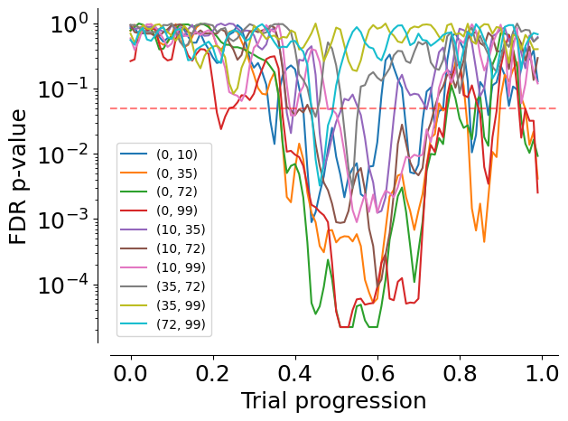